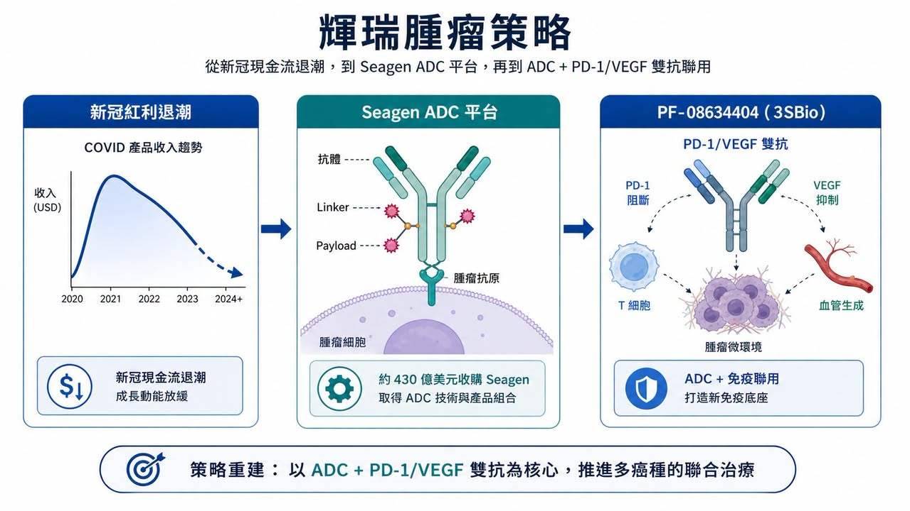
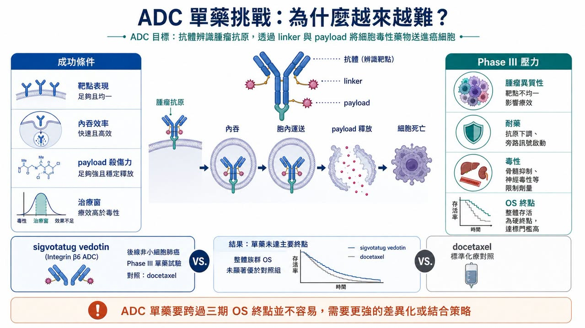
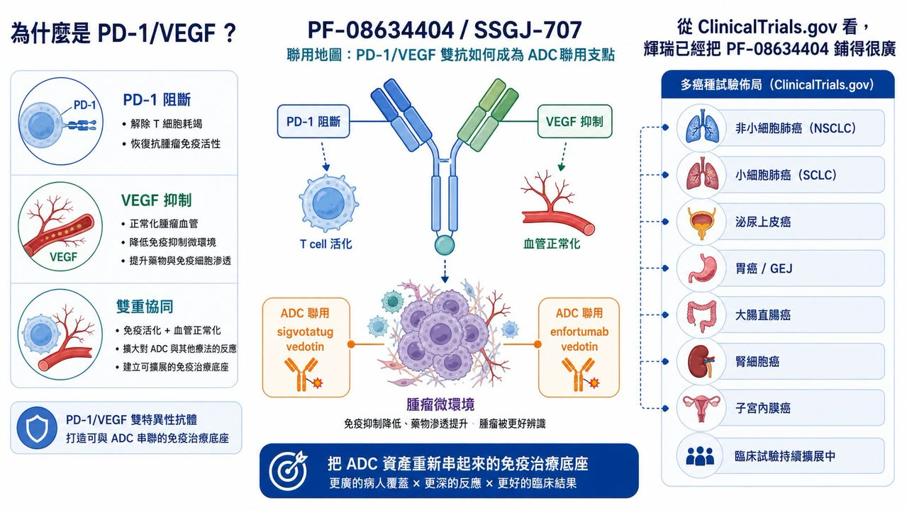
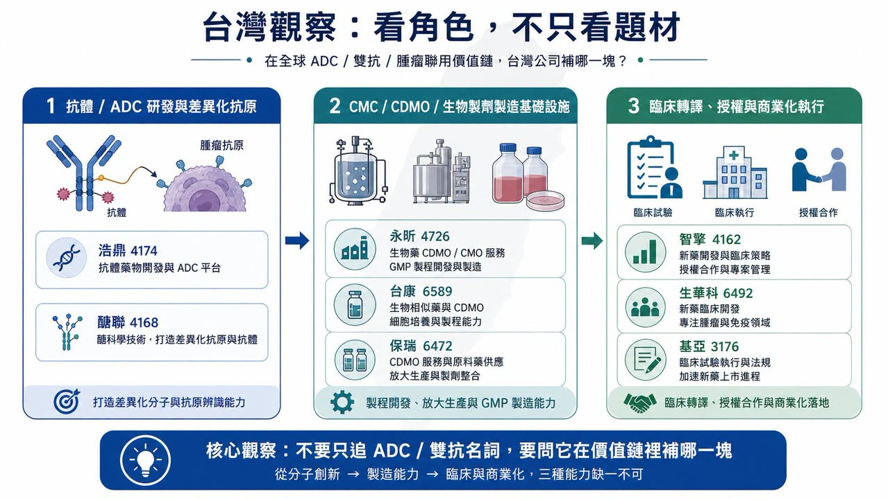

輝瑞這幾年的腫瘤策略，看起來越來越像一場不能退場的牌局。
分享這篇分析
把這篇文章轉給關注生技醫藥、公司研究或資本市場的朋友。
新冠疫苗與口服藥帶來的現金流退潮後，輝瑞必須重新回答一個問題：下一個十年的成長引擎在哪裡？
答案本來很清楚。
2023 年，輝瑞用約 430 億美元買下 Seagen，把全球最成熟的 ADC 平台之一收入旗下，試圖用抗體藥物複合體（ADC, antibody-drug conjugate）補回自己在免疫檢查點抑制劑時代錯過的機會。輝瑞官方當時說得很直接：Seagen 加入後，腫瘤管線規模幾乎倍增，涵蓋 ADC、小分子、雙抗與其他免疫療法。
但問題也從這裡開始。
ADC 不是買下平台就會自動長成金雞母。它仍然要過臨床終點、適應症選擇、競品壓力、毒性窗口、商業化定位這幾道門。尤其當一家公司用 430 億美元買下整個平台，市場不會只問「有沒有技術」，而會問：這些資產能不能真的變成下一批 blockbuster？
最近 sigvotatug vedotin 的 Phase III 單藥試驗未能達到主要終點，剛好把這個問題推到台前。
表面上看，這是輝瑞某一支 ADC 的臨床挫折。
這篇真正要拆的主線是：當 ADC 單藥敘事開始變硬，輝瑞正在把 3SBio（三生製藥）的 PD-1/VEGF 雙特異性抗體 SSGJ-707，也就是 Pfizer 代號 PF-08634404，放到整個腫瘤聯合療法策略的核心位置。
換句話說，輝瑞的 ADC 賭局，現在不只是 ADC 本身。
它正在變成「ADC 加上下一代免疫底座」的賭局。
01｜sigvotatug vedotin 失利，問題不只是單一試驗

sigvotatug vedotin 原本是 Seagen 帶給輝瑞的重要後期資產之一，早期代號 SGN-B6A。它是一款標靶 integrin beta-6（整合素 β6）的 ADC，主要被推向非小細胞肺癌等實體瘤。
integrin beta-6 在多種上皮來源腫瘤中表現，與腫瘤侵襲、轉移與不良預後有關。從機制上看，這類靶點很適合 ADC 的想像：抗體負責找癌細胞，linker 與 payload 負責把細胞毒性藥物送進去，理論上可以提高腫瘤選擇性，降低對正常組織的傷害。
但臨床不是理論簡報。
ClinicalTrials.gov 登錄的 NCT06012435 是一項 Phase III 試驗，設計為 sigvotatug vedotin 對比 docetaxel（多西他賽），用於先前治療過的非小細胞肺癌患者。這個比較本身很有象徵意義，因為 docetaxel 是老藥，也是後線肺癌治療裡很長期存在的對照標準。
原文提到，這項 SigVie-002 / Be6A Lung-01 試驗在整體族群中未能顯著改善總生存期（OS）。如果只看結果，這就是一個後線單藥 Phase III 失利。
但對輝瑞來說，壓力比一個試驗更大。
因為 sigvotatug vedotin 不是孤立資產。它是 Seagen 收購案後，市場用來檢查輝瑞 ADC 整合能力的一張考卷。當一款被寄予厚望的 ADC 單藥在關鍵後期試驗沒有打出明確優勢，投資人自然會重新問：430 億美元買來的，不只是技術平台嗎？還是買來一堆需要重新排序、重新搭配、重新下注的未完成資產？
這就是輝瑞現在的尷尬。
ADC 仍然是重要技術，但「ADC 單藥」不再自動等於高勝率。
02｜Seagen 收購案的核心，是輝瑞錯過 PD-1 黃金十年後的補課

要理解輝瑞為什麼願意付 430 億美元買 Seagen，不能只看 ADC 熱潮。
更深層的背景是，輝瑞在上一輪免疫腫瘤主戰場裡並沒有取得像 Merck 的 Keytruda（pembrolizumab）、BMS 的 Opdivo（nivolumab）那樣的核心位置。
Keytruda 幾乎成為過去十年腫瘤藥物商業化最重要的底座之一。從肺癌、黑色素瘤、腎癌、頭頸癌、胃癌到 MSI-H / dMMR 泛癌種，免疫檢查點抑制劑不只是單一產品，而是連接一整組聯合療法、臨床試驗與商業化路徑的平台。
輝瑞錯過這個時代，就必須在下一個時代找入口。
ADC 正好給了它一個答案。Seagen 有已上市產品，有 ADC 技術積累，也有多條臨床管線。對輝瑞來說，這不是單買一支藥，而是買一整套重新站進腫瘤核心戰場的門票。
官方資料顯示，輝瑞在 2023 年 12 月完成 Seagen 收購，交易企業價值約 430 億美元。Seagen 帶來的，不只是已上市產品如 ADCETRIS、PADCEV、TIVDAK 等，也包括後續 ADC 管線與技術平台。
可是，買平台和把平台變成可持續產品線，是兩件事。
ADC 的競爭已經比幾年前更擁擠。HER2、TROP2、Nectin-4、B7-H4、CLDN18.2、FRα，各種靶點都有人在做。payload 從 MMAE、MMAF、DXd、Topo I inhibitor 到更多新型毒素，平台故事越講越熱，但臨床終點也越來越嚴格。
對大藥廠來說，ADC 真正的挑戰不是「能不能做出一支 ADC」，而是：
靶點表現是否足夠區分腫瘤與正常組織？
payload 是否能打出療效，同時不把安全性窗口打爆？
linker 穩定性與旁觀者效應是否真的適合該癌種？
單藥能不能贏？若不能，能不能找到正確聯用？
在既有 PD-1、化療、標靶藥與其他 ADC 面前，商業定位是否清楚？
這些問題，才是 430 億美元收購案的真正考題。
03｜ADC 單藥越來越難，聯合療法才是下一個戰場

ADC 過去最迷人的地方，是它把抗體的標靶辨識能力和化療的殺傷力接在一起。簡單說，就是讓化療更會找路。
但當 ADC 進入更大癌種、更前線治療、更多競爭者時，單藥優勢會越來越難維持。
原因很簡單。
第一，後線患者通常已經接受多種治療，腫瘤異質性高，耐藥機制複雜。ADC 如果只靠單一靶點和單一 payload，不一定能跨過 OS 這種硬終點。
第二，前線治療已經被 PD-1 / PD-L1、化療、抗血管新生、標靶藥與其他聯用方案佔據。新的 ADC 不是和空白市場競爭，而是要證明自己能改變既有治療排序。
第三，ADC 自己也有毒性問題。肺毒性、眼毒性、周邊神經病變、骨髓抑制、肝毒性，依不同 payload 與靶點而異。聯用雖然能提高療效想像，但也可能放大毒性。
所以 ADC 的下一階段，不會只比誰有更多管線。
而是比誰能把 ADC 放到對的位置、配到對的免疫底座、選到對的病人族群。
這也是為什麼輝瑞現在更需要 PF-08634404。
如果 ADC 單藥不夠，輝瑞就需要一個能和 ADC 形成組合拳的免疫平台。過去這個角色多半是 Keytruda 或 Opdivo，但對輝瑞來說，一直靠別人的 PD-1 當底座，不可能真正建立自己的腫瘤生態系。
因此，PF-08634404 的價值，不只是多一款雙抗。
它可能是輝瑞把 Seagen ADC 資產重新串起來的免疫主幹。
04｜為什麼是 PD-1/VEGF？因為它想同時碰免疫與血管生成

PF-08634404 來自 3SBio 的 SSGJ-707，是一款 PD-1/VEGF 雙特異性抗體。
這個設計的概念，是把免疫檢查點抑制與抗血管新生放在同一個分子裡。PD-1 端負責解除 T 細胞煞車，VEGF 端則試圖改善腫瘤微環境裡血管生成、免疫抑制與腫瘤灌流等問題。
這條路線不是憑空出現。
近幾年，PD-1/VEGF 雙抗已經成為全球腫瘤免疫領域最受關注的方向之一。Merck 以高額交易拿下 Kelun Biotech 的 ADC 管線後，亞洲 biopharma 在 ADC 與雙抗上的全球存在感逐步上升；Summit 與 Akeso 合作的 ivonescimab（AK112）則讓 PD-1/VEGF 雙抗在肺癌領域被國際市場更認真看待。
輝瑞拿下 SSGJ-707，某種程度上也是在承認一件事：下一代腫瘤免疫的部分答案，可能不只來自美國或歐洲自有研發，也可能來自亞洲 biopharma 的快速試錯與臨床推進。
根據 Pfizer 2025 年 7 月 24 日公告，該公司完成與 3SBio 的全球授權協議，取得 SSGJ-707 在主要海外市場的開發、製造與商業化權利。SSGJ-707 是標靶 PD-1 與 VEGF 的雙抗，Pfizer 也明確提到，這個候選藥會補強其 ADC 產品組合，並用於多個主要腫瘤領域的聯合策略。
交易條件也很重。
3SBio 可取得 12.5 億美元付款，Pfizer 另投資 1 億美元入股，並取得未來擴大權利範圍的選擇權。這不是小型補管線交易，而是戰略型授權。
如果說 Seagen 是輝瑞買回 ADC 技術平台，那 PF-08634404 則像是輝瑞試圖買回一個新的免疫聯合療法支點。
05｜從 ClinicalTrials.gov 看，輝瑞已經把 PF-08634404 鋪得很廣
這件事不是口號。
ClinicalTrials.gov 目前已經可以看到 PF-08634404 多項臨床試驗，涵蓋非小細胞肺癌、小細胞肺癌、胃食道癌、轉移性大腸直腸癌、肝癌、腎細胞癌、泌尿上皮癌、子宮內膜癌等。
比較關鍵的是，這些試驗不只是單藥探索，而是大量聯用。
例如 NCT07222566 是 PF-08634404 聯合化療，用於局部晚期或轉移性非小細胞肺癌的 Phase III 試驗。NCT07226999 則是 PF-08634404 在廣泛期小細胞肺癌中與 atezolizumab、化療聯用的 Phase II/III 研究。NCT07421700 進一步把 PF-08634404 與 enfortumab vedotin（PADCEV）放到泌尿上皮癌裡測試。
更直接呼應這篇主題的是 NCT07227298。
這是一項 Phase I/II 試驗，名稱就寫得很清楚：PF-08634404 與不同抗癌藥物聯用，用於晚期癌症，其中介入項目包含 PF-08634404、sigvotatug vedotin 與其他聯合藥物。
換句話說，輝瑞已經在試著把「PD-1/VEGF 雙抗」和「integrin beta-6 ADC」接起來。
這裡的戰略意義很大。
如果 sigvotatug vedotin 單藥在後線 NSCLC 沒有打出足夠明確的 OS 優勢，輝瑞還有兩條路可以走：一是往更早線治療推，二是找更合適的聯用底座。PF-08634404 可能同時扮演這兩個角色。
這也是為什麼 SSGJ-707 可能成為支點。
它不是因為地區標籤而重要，而是因為輝瑞需要一個能把 ADC 資產重新組合、重新定位、重新推向大癌種的底層工具。
06｜輝瑞真正想複製的，可能是 PADCEV + Keytruda 的邏輯
如果要找一個輝瑞最想複製的成功案例，PADCEV 加 Keytruda 會是很合理的答案。
PADCEV（enfortumab vedotin）是標靶 Nectin-4 的 ADC，由 Seagen / Astellas 開發，後來成為泌尿上皮癌治療的重要資產。Keytruda 則是 Merck 的 PD-1。兩者聯用在一線局部晚期或轉移性泌尿上皮癌中打出很強的數據，讓 ADC 加免疫療法的商業想像大幅升高。
問題是，Keytruda 是 Merck 的。
對輝瑞來說，PADCEV + Keytruda 代表一個已被驗證的方向，但也提醒它一個尷尬現實：如果核心免疫底座不在自己手上，ADC 的平台價值就會被別人的 PD-1 分走一部分。
所以輝瑞如果想真正打造自己的腫瘤聯合療法生態，最終還是要有自己的免疫骨架。
PF-08634404 就在這個位置上。
它不一定要立刻取代所有 PD-1，也不一定每個適應症都會成功。但只要在肺癌、泌尿上皮癌、胃食道癌、大腸直腸癌或婦科腫瘤中跑出一兩個足夠強的聯用訊號，輝瑞就有機會把 Seagen 留下來的 ADC 資產，重新放進自己的臨床組合裡。
白話講，輝瑞不是只在買一款雙抗。
它是在買「不用永遠借 Keytruda 的路」。
07｜台灣投資人可以怎麼看？不要只看 ADC 題材，要看三種能力
放回台灣，這件事不能簡化成「誰是 ADC 概念股」。
ADC、雙抗、免疫聯用這些題材都很熱，但真正能被國際藥廠看見的，不是簡報上寫了 ADC 或 bispecific，而是有沒有能力回答三個問題：有沒有好靶點？有沒有可放大的製程與 CMC？有沒有足夠清楚的臨床定位？
台灣可以從幾個方向觀察。
第一，是真正做 ADC 或抗體平台的公司。
浩鼎（4174）長期布局醣脂抗原與抗體藥物，過去也有 ADC 相關管線與癌症免疫治療方向。這類公司值得看的不是短線題材，而是靶點選擇、臨床資料、授權可能性與是否能避開全球同質化競爭。
醣聯（4168）則可放在醣科學、抗體與特殊靶點開發的脈絡裡看。ADC 與雙抗競爭越來越擁擠後，真正有價值的不是又做一個熱門靶點，而是能不能找到差異化抗原與可轉譯的疾病定位。
第二，是生物製劑製程與 CDMO 能力。
永昕生醫（4726）與台康生技（6589）可從生物藥 CDMO、抗體製程、臨床用藥製造與國際法規製造角度觀察。未來如果更多 ADC、雙抗、融合蛋白、免疫聯用資產進入臨床，CMC、臨床用藥製造、品質系統與放大製程會越來越重要。
保瑞（6472）不是 ADC 研發公司，但它代表台灣少數具備國際併購、跨國製造與商業化整合經驗的製藥平台。當大藥廠越來越重視供應鏈彈性，這類能力可以放在更大的「製藥基礎設施」裡觀察。
第三，是已經走到商業化或臨床後段的新藥公司。
智擎（4162）可以從腫瘤藥物國際授權與商業化經驗切入。它不是 ADC 題材，但能提醒市場：一個台灣新藥資產要被國際市場認真看，最後還是要回到臨床定位、授權條件、法規路徑與商業化執行。
生華科（6492）與基亞（3176）則可以放在腫瘤臨床轉譯、試驗執行與疾病機制選擇的角度觀察。這類公司不是看題材名稱，而是看臨床設計、病人分層與資料能不能累積到足以支撐下一輪合作。
台灣投資人不要只問：誰有 ADC？
更應該問：誰的靶點不是 me-too？誰有臨床轉譯能力？誰有製程與 CMC 能力？誰能接上國際藥廠的聯合療法需求？
這才是輝瑞這件事給台股的啟示。
08｜這場賭局真正的風險：雙抗不是萬靈丹，ADC 也不是免死金牌
當然，PF-08634404 也不是萬靈丹。
PD-1/VEGF 雙抗本身還需要更多全球 Phase III 資料驗證。早期或中期資料能不能外推到全球多族群？和既有 PD-1、PD-L1、VEGF 抑制劑、化療、ADC 聯用時，安全性是否可控？在不同癌種裡，真正能打出商業化優勢的是哪幾個？這些都還沒答案。
ADC 也是一樣。
一款 ADC 單藥失利，不代表整個平台失敗；但一款 ADC 早期數據漂亮，也不代表 Phase III 一定成功。ADC 最終會被很現實的問題檢驗：OS 有沒有改善？PFS 是否足夠？ORR 能不能轉成長期獲益？毒性可不可管理？和標準治療相比，有沒有足夠理由改變醫師處方？
輝瑞現在真正的挑戰，是同時解兩道題。
第一道，是證明 Seagen 的 ADC 資產不只是昂貴收藏，而能成為可持續的產品線。
第二道，是證明 PF-08634404 不只是漂亮的授權交易，而能成為輝瑞腫瘤聯合療法的新底座。
這兩道題如果同時答對，輝瑞就有機會補回 PD-1 時代錯過的東西。
如果答錯，430 億美元的 Seagen 收購、12.5 億美元前金的 3SBio 授權，以及一整套 ADC 加免疫聯用想像，都會被市場重新打折。
結語｜輝瑞不是只押 ADC，而是在重建自己的腫瘤底座
輝瑞這場 ADC 賭局，表面上是 sigvotatug vedotin 單藥 Phase III 失利。
但更深一層，是一個大藥廠在錯過 PD-1 黃金十年後，如何用 ADC、雙抗與聯合療法重新爭取腫瘤市場的主導權。
Seagen 讓輝瑞拿到 ADC 平台。
PF-08634404 讓輝瑞有機會建立自己的新免疫底座。
ClinicalTrials.gov 上一串以 Symbiotic 命名的試驗，某種程度上已經把輝瑞的想法寫出來了：不是單一藥物作戰，而是把雙抗、ADC、化療、免疫療法放進不同癌種裡重新排列組合。
這是一條可能很有價值的路，但也是一條非常昂貴、非常考驗臨床執行力的路。
對台灣投資人來說，這篇最重要的啟示不是追逐 ADC 熱門字眼。
而是要看懂：下一階段腫瘤新藥的價值，會從單一管線故事，走向平台能力、聯用設計、臨床定位與國際合作能力。
不是有 ADC 就值錢。
不是有雙抗就值錢。
真正值錢的是，誰能把這些技術放到正確的癌種、正確的治療線、正確的病人族群裡，最後真的改變標準治療。
輝瑞這場賭局，還沒有開獎。
但它已經提醒市場：腫瘤藥的下一輪競爭，不會只比誰手上牌多，而是比誰能把牌組成一套真的能贏的打法。
參考資料：
- Pfizer, Pfizer Completes Acquisition of Seagen, 2023/12/14。
- Pfizer, Pfizer Completes Licensing Agreement with 3SBio, 2025/07/24。
- ClinicalTrials.gov, NCT06012435, SGN-B6A versus docetaxel in previously treated NSCLC。
- ClinicalTrials.gov, NCT06758401, sigvotatug vedotin plus pembrolizumab in PD-L1 high NSCLC。
- ClinicalTrials.gov, NCT07227298, PF-08634404 combination study in advanced cancers。
- ClinicalTrials.gov, NCT07222566, PF-08634404 plus chemotherapy in NSCLC。
- ClinicalTrials.gov, NCT07226999, PF-08634404 in extensive-stage small cell lung cancer。
- ClinicalTrials.gov, NCT07421700, PF-08634404 plus enfortumab vedotin in urothelial cancer。
免責聲明：本文僅為產業研究與市場觀察，不構成任何投資建議、買賣建議或個股推薦。生技醫藥投資涉及臨床試驗、法規審查、授權談判、商業化、匯率與資本市場波動等多重風險，投資人應自行判斷並自負盈虧。
更多生技醫藥產業研究與公司觀察，歡迎追蹤藥時事官方網站：
引用本文
若在簡報、報告或社群討論引用，建議附上 Drugnews 原文連結。
Drugnews 編輯部，〈【輝瑞 ADC 賭局：430 億美元買下 Seagen 之後，為什麼 3SBio 的 PD-1/VEGF 雙抗變成新支點？】〉，Drugnews｜藥時事，2026/07/07，https://drugnews.com.tw/articles/2026-07-07-pfizer-seagen-3sbio-adc-pd1-vegf.html
社群原文
讀完這篇，下一步看
這三篇會優先依主題、標籤與產業脈絡推薦，幫你把同一個問題讀得更完整。

2026 ASCO：生存期翻倍、體內 CAR-T 破局，腫瘤治療正在換一個時代
2026 年美國臨床腫瘤學會年會，也就是 ASCO，最該被記住的贏家，並不是任何一家藥廠，而是癌症患者。

半年併購 1,340 億美元：Big Pharma 到底在搶什麼？
2026 年才過一半，全球製藥業的併購節奏已經快到讓人有點恍神。

GSK 用 106 億美元買下 Nuvalent：真正買的不是三條肺癌管線，而是「耐藥與腦轉移」的下一代解法
2026 年 6 月 9 日，GSK 宣布以 106 億美元全現金收購 Nuvalent，收購價格為每股 124 美元，較 Nuvalent 前一交易日收盤價溢價約 40%。這是 GSK 近年最大型的腫瘤併購之一，也讓它瞬間補上肺癌精準治療版圖中最缺的一塊。